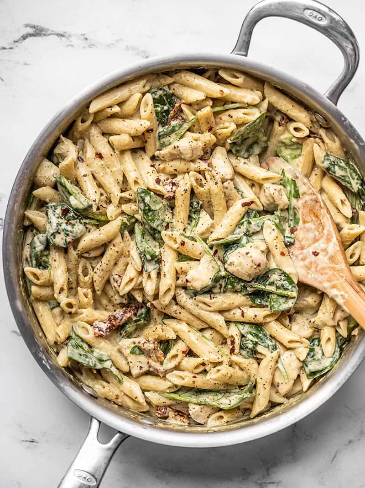

Chicken Pesto Pasta

Chicken Pesto Pasta is without a doubt one of the best things you can cook on date night
Make this for the special gal or guy in your life and you are sure to be showered in compliments
Special shoutout to Budget Bytes for their amazing recipe which has been saving my ass for years now.
Ingredients
- 1 lb boneless, skinless chicken breast
- 2 Tbsp butter
- 2 cloves garlic
- 1/2 lb. penne pasta
- 1.5 cups chicken broth
- 1 cup milk
- 3 oz. cream cheese
- 1/3 cup basil pesto
- 1/4 cup grated Parmesan
- freshly cracked pepper
- 1 pinch crushed red pepper
- 3 cup fresh spinach
- 1/4 cup sliced sun dried tomatoes
Steps
- Cut the chicken breast into 1-inch pieces. Add the butter to a deep skillet and melt over medium heat. Add the chicken to the skillet and cook over medium heat until the chicken is slightly browned on the outside.
- While the chicken is cooking, mince the garlic. Add the garlic to the skillet with the chicken and continue to sauté for one minute more
- Add the uncooked pasta and chicken broth to the skillet with the chicken and garlic. Stir to dissolve any browned bits from the bottom of the skillet. Place a lid on the skillet, turn the heat up to medium-high, and bring the broth up to a boil.
- Once the broth comes to a full boil, give the pasta a quick stir, replace the lid, and turn the heat down to medium-low. Let the pasta simmer over medium-low heat for about 8 minutes, or until the pasta is tender and most of the broth has been absorbed. Stir the pasta briefly every two minutes as it simmers, replacing the lid quickly each time.
- Once the pasta is tender and most of the broth absorbed, add the milk, cream cheese (cut into chunks), and pesto. Stir and cook over medium heat until the cream cheese has fully melted into the sauce. Finally, add the grated Parmesan and stir until combined.
- If using, add the fresh spinach and sliced sun dried tomatoes. Stir until the spinach has wilted, then remove the pasta from the heat. Top the pasta with freshly cracked pepper and a pinch of crushed red pepper, then serve.